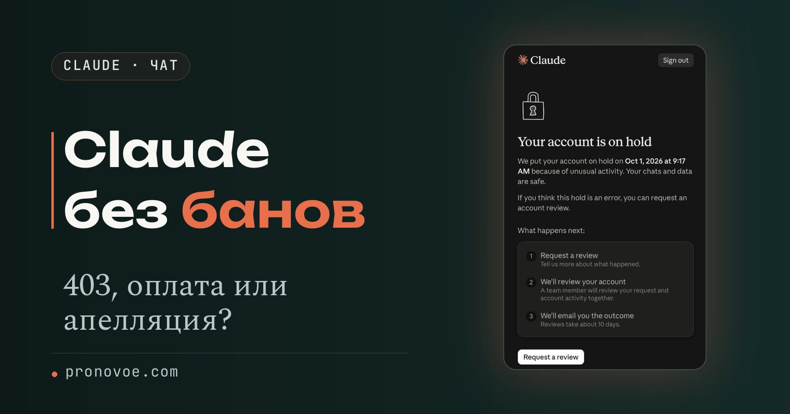
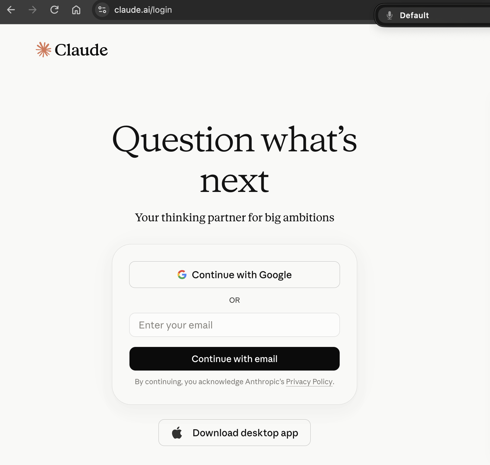
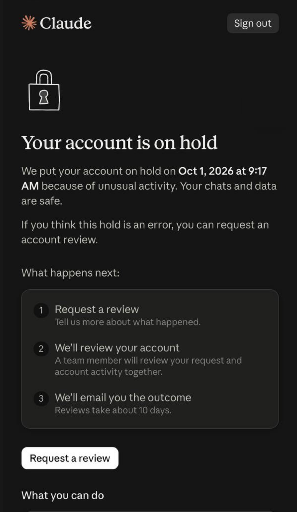

Claude.ai · доступ из России
Claude из России не пускает: ошибка 403, отказ оплаты, блокировка и апелляция
Начальный уровень
Если Claude не пускает в аккаунт, важно сохранить доступную работу и понять, какое действие поможет при твоей ошибке. В статье разберём повторный вход, ошибку 403, отказ оплаты и официальный запрос на пересмотр блокировки.

Содержание статьи
Начинаешь с первого подключения? Открой базовую инструкцию по входу и проверке VPN. Если на экране уже ошибка или ограничение аккаунта, выбери свою ситуацию ниже
Первый шаг
Шаг 1. Запиши сообщение и выбери маршрут
Похожие слова «нет доступа» скрывают разные ситуации. Не меняй сеть и не создавай новый аккаунт, пока не выяснишь, какая из них произошла
Что произошло у тебя?
- Claude просит войти или не присылает письмоНачни с восстановления входа в прежний аккаунт
- Появилась форма апелляции или сообщение об отключении аккаунтаСначала сохрани данные, затем попроси пересмотреть решение
- Сайт или Claude Code показывает
403либоApp unavailable in regionПроверь доступность сервиса и сетевой маршрут - Не проходит карта или не продлевается подпискаНачни с проверки платежа
- В сообщении указан срок сброса лимитаЭто ограничение использования. Дождись указанного времени или посмотри лимиты тарифа
- Claude Code пишет
This organization has been disabled, а сайт работаетПроверь способ входа в Claude Code: он мог подключиться к другой API-организации
Внимание. Для читателя из России есть условие, которое важно знать до любой настройки. России нет в официальном списке поддерживаемых стран Anthropic. В правилах об ограничениях компания относит создание аккаунта из неподдерживаемого региона к возможным причинам отключения. Настройка сети не меняет правила для владельца аккаунта и не гарантирует доступ
Вход в прежний аккаунт
Шаг 2. Вернись в прежний аккаунт
Обычный запрос входа ещё не означает блокировку. По справке Anthropic, сессия браузера заканчивается после 28 дней бездействия. Вход потребуется также после очистки данных браузера или на новом устройстве
- Открой claude.ai и используй тот же способ входа, что раньше:
Continue with Googleс прежним Google-аккаунтом илиContinue with emailс прежним адресом - При входе по почте открой последнее письмо с темой
Secure link to log in to Claude.ai. Если письмо открыто на другом устройстве, введи показанный код там, где запущен вход - Если письма нет, проверь спам и фильтры почты для
mail.anthropic.com. Для рабочей почты попроси администратора проверить карантин. Не запрашивай много новых писем подряд: используй последнее полученное

Проверка результата: после входа должны появиться прежние чаты
Если история пуста, проверь, не выбран ли другой Google-аккаунт или адрес почты. Если вместо чатов открылась форма пересмотра, переходи к разделу о данных заблокированного аккаунта
Если ошибка появилась только в Claude Code
Claude Code может работать через личную подписку или через API-организацию. Сообщение This organization has been disabled относится к организации, к которой подключена программа; оно само по себе не доказывает блокировку личного аккаунта на claude.ai. В открытом Claude Code введи команду и проверь, каким способом выполнен вход:
/status
Этот фрагмент нужен только тем, кто пользуется Claude Code. API-организация - отдельная учётная область для программного доступа к модели, она может отличаться от личной подписки. На Mac и Linux переменная ANTHROPIC_API_KEY задаёт ключ такого доступа. Если старый ключ больше не нужен в текущем терминале, команда unset ниже временно уберёт его из этой сессии; сам ключ у провайдера она не удаляет. Затем запусти Claude Code снова.
unset ANTHROPIC_API_KEY claude
Если организация принадлежит работодателю, её статус и права участников уточняй у администратора. Если после проверки способа входа сайт тоже показывает блокировку личного аккаунта, действия уже другие - сначала сохрани данные, затем подай апелляцию
Проверка соединения
Отдели сетевую ошибку от ограничения аккаунта
Что означает 403. Ошибка 403 означает, что запрос отклонён, но по одному коду нельзя установить причину. Начни с текста рядом с кодом и места, где он появился. Форма апелляции после входа указывает на аккаунт; App unavailable in region указывает на доступность региона; ошибка только в Claude Code может относиться к его способу подключения
Проверь по порядку
- Проверь статус Claude. Если у сервиса сбой, дождись его устранения и не перестраивай свою сеть
- Сравни поведение сайта и Claude Code. Если сайт открывается, а терминал получает 403, выясни, использует ли VPN полное туннелирование для всего компьютера. Прокси только в браузере не проверяет маршрут программы в терминале
- Если подключение идёт через VPN, открой настройки приложения и найди режим для всей системы или полный туннель. Затем в том же терминале, где запускаешь Claude Code, проверь внешний IP:
curl -4 https://api.ipify.org
Команда выводит внешний IP-адрес, с которого этот терминал обращается к api.ipify.org. Сравни его с адресом, который показывает приложение VPN для текущего подключения. Если адреса различаются, терминал может идти другим маршрутом. Проверка IP в браузере показывает только путь браузера и не заменяет эту команду; отдельные настройки Claude Code тоже могут влиять на соединение.
- Если надпись прямо говорит о регионе, сверь страну использования и условия Anthropic с официальным списком. Если страна не поддерживается, официального маршрута для личного аккаунта Claude из неё нет. Сохрани доступную работу и выбери сервис, доступный по его правилам
Если после каждой ошибки переключать страну и сервер, будет непонятно, какая настройка изменила результат. Полное туннелирование означает, что VPN проводит через себя трафик всего компьютера. Автоподключение запускает выбранный маршрут, а Kill Switch останавливает соединение при обрыве VPN. Эти настройки не меняют решение Anthropic об аккаунте.
Куда идти после проверки
Даже если VPN был один и тот же и страна не менялась, внезапная ошибка ещё не доказывает блокировку. Ориентируйся на точную надпись на экране
- Появилась форма пересмотра: сначала проверь сохранение данных, затем подай апелляцию
- Страна поддерживается, а проблема в соединении: смотри инструкцию о своём сервере для Claude и его ограничения
- Сообщение говорит о неподдерживаемом регионе: собственный сервер не решает вопрос права доступа
Подписка и карта
Проверь отказ платежа
Когда платный тариф не включился или пропал после продления, легко принять это за блокировку. Сначала посмотри на точное сообщение в платёжной форме и уведомление банка: отказ списания означает проблему оплаты, а не сам по себе отключение аккаунта
Возможная причина - что сделать
- Ошибка в данных карты: проверь номер, срок, CVC и платёжный адрес. Адрес должен соответствовать данным у банка, а страна выпуска карты - условиям оплаты Anthropic
- Банк остановил операцию: проверь баланс, международные платежи, лимит и запрос подтверждения. Точную причину отказа и возможность повторного списания уточняй в банке
- Не прошло продление: в своём аккаунте открой статус подписки и способ оплаты; проверь, не истёк ли срок карты
Справка Anthropic отдельно называет неподдерживаемую страну выпуска карты, несовпадение платёжного адреса, недостаток средств и неподтверждённую операцию
VPN не меняет данные банка. Виртуальная карта, её пополнение у посредника и списание за Claude - разные операции: успешное пополнение не гарантирует оплату подписки
Проверка результата: тариф появился в Claude, а списание видно в банке
Не повторяй одну и ту же отклонённую попытку много раз. Если банк подтверждает успешную операцию, а тариф не появился, обратись в поддержку Anthropic с данными платежа. Если аккаунт куплен у посредника, вопрос возврата или замены решай с продавцом по условиям покупки; вопрос блокировки аккаунта идёт через отдельную апелляцию
Если аккаунт отключён
Шаг 3. Сохрани доступную работу
При отключении аккаунта главное сейчас - не потерять переписки и файлы проекта. Апелляция может занять время и не гарантирует возврата доступа, поэтому сначала сохрани то, что ещё можно открыть
Запроси экспорт переписок
Anthropic допускает вход в отключённый личный аккаунт Free, Pro или Max ради выгрузки или удаления данных. Доступный объём экспорта зависит от ограничения
Войди в прежний аккаунт и посмотри, предлагает ли экран ограничения экспорт. Если обычное меню доступно, на сайте или в Claude Desktop открой значок профиля слева внизу, затем Settings → Privacy → Export data по официальной инструкции
Проверь полученный архив
Ссылка для скачивания придёт на почту аккаунта после подготовки архива. Войди под тем же аккаунтом, скачай архив и открой файл. Ссылка действует 24 часа после отправки письма
С телефона в приложении iOS или Android запросить экспорт нельзя. Для Team или Enterprise самостоятельный экспорт данных организации доступен её главному владельцу (Primary Owner)
Сохрани и переписки, и проект. Работа Claude Code с локальными файлами может уже лежать на твоём компьютере. Проверь папку проекта и сделай её копию отдельно от истории чатов. Если проект был на удалённом сервере, проверь файлы и скопируй их за пределы этого сервера. Экспорт переписок и копия проекта решают разные задачи
Результат: если экспорт доступен, архив скачан и открывается; копия файлов проекта сохранена отдельно
Дальше отдели подтверждённые причины от догадок и переходи к апелляции. Если экспорт недоступен, подать её всё равно можно
Причины ограничений
Сверь причину с официальными правилами
Когда появляется сообщение об отключении аккаунта Claude, хочется найти один «прокол», после которого это случилось. Anthropic не раскрывает причину каждого решения. Сначала отдели её опубликованные правила от пользовательских версий: так ты сможешь описать факты в апелляции, не объявляя догадку доказательством
Что известно из правил Anthropic
- Регион: создание аккаунта из страны вне списка поддерживаемых названо в справке возможной причиной отключения. России в списке нет
- Правила использования: ограничения возможны при нарушении условий сервиса и политик использования. Точная причина конкретного решения может быть неизвестна владельцу аккаунта
Номер телефона и вход через Google относятся к соседним шагам регистрации. Их ошибки легко спутать с отключением Claude, поэтому проверь, где именно появилось сообщение
Подтверждённые правила для номера
- При регистрации Google: несколько аккаунтов Google сами по себе разрешены, но число проверок с одного номера ограничено. Ошибку номера решай в Google
- При регистрации Claude: Anthropic разрешает подтвердить до трёх аккаунтов Claude одним номером. Ошибка на следующей регистрации не доказывает блокировку действующего аккаунта
Пользовательские версии. Новый Google-аккаунт, карта другого человека или номер, уже использованный в нескольких аккаунтах Google, могут казаться подозрительными признаками. Есть предположение, что система накапливает несколько сигналов и ограничивает доступ позже. Anthropic не подтверждает эти признаки и не публикует балльный порог. По ним нельзя установить причину конкретной блокировки или обещать «безопасную» комбинацию
Если ошибка была на стороне Google, возвращайся к входу прежним способом. Если банк отклонил карту, смотри платёжный маршрут. Если Anthropic отключила аккаунт, сохрани доступные данные и подай апелляцию; покупка VPS или другой карты прежний аккаунт не восстановит
Официальный пересмотр
Шаг 4. Запроси пересмотр решения
Если Anthropic действительно отключила личный аккаунт, настройка сети и новый платёж не изменят это решение. Следующий путь - запросить пересмотр через форму своего аккаунта; если открыть её нельзя, обратиться в поддержку с точным сообщением об ошибке
Войди на claude.ai прежним способом под адресом отключённого аккаунта. Если показан экран Your account is on hold, нажми Request a review («Запросить пересмотр»). Сохрани подтверждение и следи за почтой. На сохранённом экране могут быть указаны условия именно этого аккаунта; общего срока ответа он не подтверждает. Если кнопки нет, открой Get help или справочный центр и сообщи, что не можешь войти либо найти форму.

Если личный аккаунт работает, но на экране указана приостановленная организация, выбери эту организацию и нажми Request a review. Это отдельный путь пересмотра для организации. Если нужной кнопки или прав нет, передай точное сообщение владельцу или администратору организации
Если форму апелляции невозможно открыть
- Не удаётся войти в старый аккаунт: проверь прежний способ входа и почтовую ссылку из первого раздела. В справочном центре используй значок сообщения и вариант
I can't login. Опиши, что мешает войти именно в тот аккаунт, где должна появиться форма - Вход есть, формы нет: зафиксируй точную надпись или скрин без личных данных для публичного показа. Открой
Get helpиз меню профиля и сообщи, что после входа не видишь форму из официальной инструкции. Укажи адрес аккаунта и дату ограничения - Показано предупреждение, а доступ ещё работает: это не отключение. В справке Anthropic для предупреждений указан отдельный канал; форму бана для такого случая искать не нужно
Канал поддержки при невозможности входа помогает разобраться с доступом и доступным экспортом, но не обещает заменить саму процедуру пересмотра решения безопасности. Если в ответе сказано, что пересмотр недоступен, сохрани это сообщение и данные, которые удалось выгрузить. Покупка нового VPS, смена почты и повторный платёж не создадут форму внутри старого аккаунта
Что написать в обращении. Достаточно четырёх фактов: адрес затронутого аккаунта, когда пропал доступ, точная надпись на экране и как сервис использовался на самом деле. Не называй предполагаемую причину установленной, если Anthropic её не сообщила. Справка не обещает ни положительного решения, ни точного срока ответа
Ниже черновики для разных обстоятельств. Выбери один, который соответствует фактам, замени текст в квадратных скобках своими данными и проверь письмо перед отправкой. Это примеры формулировок, а не официальные формы
Причина ограничения неизвестна
Hello. I am requesting a review of the restriction on my Claude account registered to [your email]. Access stopped around [date], and the message I see is [exact message]. I use the service for [your actual work]. I am not aware of a violation and would appreciate a review of the decision. Please tell me if you need more information to identify the account or understand what happened. Thank you.
Перевод письма на русский
Здравствуйте. Прошу пересмотреть ограничение моего аккаунта Claude, зарегистрированного на [ваша почта]. Доступ пропал примерно [дата], на экране написано [точное сообщение]. Я использую сервис для [ваша реальная работа]. Мне неизвестно о нарушении, прошу пересмотреть решение. Сообщите, если нужны дополнительные сведения, чтобы найти аккаунт или разобраться в произошедшем. Спасибо.
Перед ограничением менялась сеть
Hello. Please review the restriction on [your registered email]. I noticed it on [date]. Around that time I used [truthful description of networks or travel], so my connection details may have changed. I use Claude for [real purpose] and would like to understand whether this contributed to the decision. I can provide any relevant details you request. Thank you for looking into this.
Перевод письма на русский
Здравствуйте. Прошу пересмотреть ограничение аккаунта [почта регистрации]. Я заметил его [дата]. Примерно тогда использовались [правдивое описание сетей или поездки], поэтому сведения о соединении могли измениться. Я использую Claude для [реальная цель] и хочу понять, повлияло ли это на решение. Могу предоставить необходимые подробности. Спасибо за рассмотрение.
Ограничение появилось после интенсивной работы
Hello. My account [your registered email] was restricted on or around [date]. Before that I worked on [brief description of the real task]. The activity involved [truthful description of how you used Claude]. If this pattern was interpreted as automated misuse, I would appreciate a review with that context. Please let me know what information would help. Thank you.
Перевод письма на русский
Здравствуйте. Мой аккаунт [почта регистрации] был ограничен примерно [дата]. До этого я работал над [краткое описание реальной задачи]. Работа включала [правдивое описание использования Claude]. Если такие действия были приняты за недопустимую автоматизацию, прошу пересмотреть решение с учётом этого контекста. Сообщите, какая информация поможет. Спасибо.
Нужен контекст одного разговора
Hello. I am asking for a review of the restriction on [your registered email], which appeared around [date]. A conversation about [brief neutral topic] may have lacked context. My actual purpose was [truthful legitimate purpose]. I respect the Usage Policy and can explain the context in more detail if needed. Please review the decision when possible. Thank you.
Перевод письма на русский
Здравствуйте. Прошу пересмотреть ограничение аккаунта [почта регистрации], появившееся примерно [дата]. В разговоре о [краткая нейтральная тема] могло не хватить контекста. На самом деле моя цель была [правдивая допустимая цель]. Я соблюдаю правила использования и при необходимости могу объяснить контекст подробнее. Прошу пересмотреть решение, когда это будет возможно. Спасибо.
После отправки: сохрани подтверждение, если оно появится, и следи за почтой прежнего аккаунта
Пока ждёшь, не удаляй аккаунт и не рассчитывай, что новая регистрация вернёт старые чаты. Правило Anthropic о 30 днях касается повторной регистрации после добровольного удаления. При отключении за нарушение правил прежний адрес нельзя использовать для нового аккаунта и после этого срока
У проверки входа, выгрузки и апелляции нет общего таймера. Письмо для входа может появиться быстро или задержаться из-за почтового фильтра. Выгрузка зависит от того, что сервис показывает конкретному аккаунту. Для апелляции Anthropic не обещает точного срока ответа. Пока ждёшь, продолжай работу с уже сохранёнными файлами и не подавай несколько обращений с противоречивыми версиями одного события
Три документа для разных причин
Если хочется понять, что именно нарушено, начни с нужного документа. Usage Policy описывает допустимое использование, Consumer Terms - условия личного аккаунта, а Supported Countries - географию доступа. По одному тексту ошибки нельзя восстановить внутренний алгоритм проверки.
Не передавай учётные данные посторонним и не покупай общий аккаунт как способ восстановления. Создание другого аккаунта ради обхода ограничения не является апелляцией. Свой сервер может изменить сетевой маршрут, но не пользовательские условия.
Советы о «чистом IP», возрасте почты или особой карте не дают гарантии сохранности аккаунта. У сервиса нет опубликованной формулы, по которой можно вычислить безопасное сочетание этих признаков. Официальные инструменты Claude Code и API тоже подчиняются правилам аккаунта.
После диагностики
Что проверить после каждого исхода
- Вход восстановлен: проверь прежние чаты и тариф, затем сохрани важные материалы
- Доступ вернули после апелляции: проверь переписки и локальные проекты, затем сделай экспорт. Если подозреваешь чужой вход, заверши активные сессии в
Settings → Accountи отдельно проверь ключи Claude Code и API - В апелляции отказали: продолжай работу с сохранёнными файлами в доступном тебе сервисе
- Ошибка 403 исчезла: повтори действие, на котором она появлялась, в том же приложении. Если регион не поддерживается, используй исход из сетевой ветки
- Платёж прошёл: проверь статус подписки в аккаунте и банковское списание. Если банк снова отказал, вернись к причине отказа в платёжной ветке
На будущее держи копию важных файлов вне единственного сервиса и запоминай, каким адресом и способом входа пользуешься. Тогда при следующем сбое ты сначала увидишь конкретный симптом, а не будешь одновременно менять сеть, карту и аккаунт
Памятка при потере доступа
- Запиши точную надпись и место ошибки: браузер, Claude Code или платёжная форма.
- Используй прежнюю почту и прежний способ входа, проверь спам и карантин.
- При доступном экспорте скачай архив и открой его; локальные файлы проекта сохрани отдельно.
- При отключении аккаунта подай одно правдивое обращение через официальный путь.
- Для сообщения об организации сначала уточни статус у её владельца.
- После восстановления проверь чаты, тариф и активные сессии, затем обнови резервную копию.
Частые вопросы
Одинаковая сеть исключает блокировку?
Нет. Сетевой маршрут не подтверждает соблюдение остальных условий и не объясняет решение проверки аккаунта.
Предупреждение обязательно приходит перед отключением?
Справка описывает предупреждения, но не обещает их перед каждым ограничением. Отсутствие письма само по себе не доказывает, что ошибки аккаунта нет.
Почему после нового входа нет старых чатов?
Сначала сверь адрес и способ авторизации. Вход в другой аккаунт может выглядеть как потеря истории, хотя прежний аккаунт не менялся.
Что делать, если аккаунт куплен у посредника и его отключили?
Сохрани номер заказа, условия обещанной замены и сообщение об отключении. Вопрос возврата или замены решай с продавцом через канал покупки. Если тебе доступен прежний аккаунт, официальный пересмотр блокировки идёт отдельно через Anthropic. Продавец не может гарантировать снятие решения Anthropic
Где хранить результат после восстановления?
Сохрани архив переписок и копию проекта вне единственного компьютера или сервера. Экспорт Claude не переносит разговоры автоматически в другой личный аккаунт; рабочие файлы из Claude Code копируй отдельно
Документы сервисов
Официальные источники
- Anthropic: поддерживаемые страны и регионы
- Anthropic: предупреждения, ограничения и апелляции
- Anthropic: как обратиться в поддержку
- Anthropic: вход в аккаунт Claude
- Anthropic: проверка номера телефона
- Google: использование нескольких аккаунтов
- Google: ограничение проверок номера
- Anthropic: срок сессии и выход
- Anthropic: новый аккаунт после удаления
- Anthropic: причины отказа карты
- Anthropic: экспорт данных Claude
Причина сбоя отделена от догадок, доступная переписка и файлы сохранены. После восстановления ещё нужно собрать из них рабочий порядок: какие задачи поручать помощнику и как доводить контент или страницу до выпуска. Ниже - о такой работе с нейросетями без знания кода.
Что можно делать с нейросетями, если не знаешь кода?
Чтобы почувствовать размах, посмотри Концентрат Ивана Сергеева. ИИ-агенты на твоих глазах собирают продукт, контент, сайты и воронки без кода. Это основа под любую цель: свои услуги, партнёрка, чужой бизнес. Три дня бесплатно, VIP с четвёртым днём - 990 ₽
Забрать КонцентратУже знаешь, чего хочешь? Тогда в мастер-группу Ивана: система продаж на ИИ без продюсера и технаря, сопровождение и сообщество
Заполнить анкету предзаписиНабор открывается редко, кто записался заранее, получает лучшую цену и бонусы. Платить сейчас не нужно
Реклама. ИП Сергеев И. С., ИНН 352511695540. erid: 2Vtzqvk2p6q